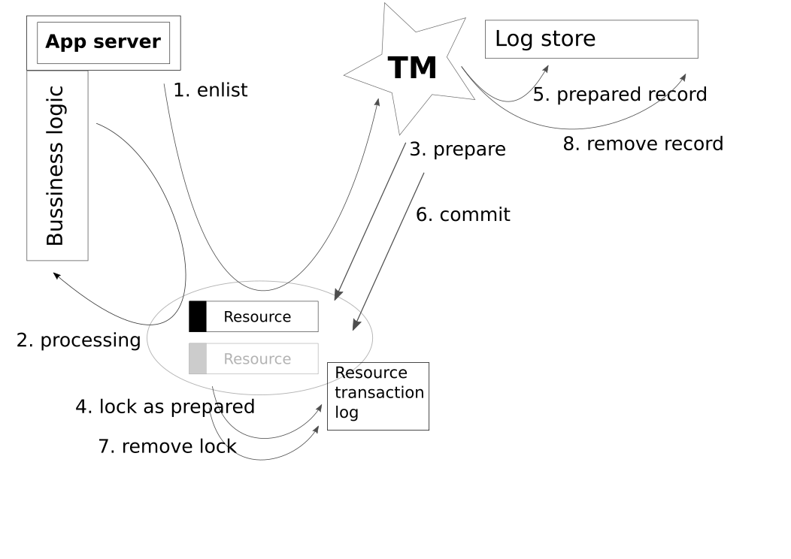
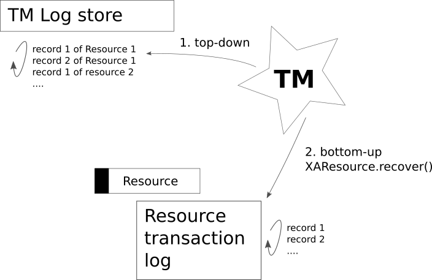

EAP7-264 / JBTM-860
Ondra Chaloupka / ochaloup@redhat.com
use XAResourceWrapper metadata for assume complete?
[WARN] ARJUNA016037: Could not find new XAResource to use for recovering non-serializable XAResource XAResourceRecord
Transaction processing

Transaction recovery

Test scenario
prepare XA resource
prepare TestXA resource
commit XA resource
JBoss EAP JVM crash
recovery started
commit TestXA resource
Old days (=< EAP6.x)
wait for
ExpiryScannerset
JTAEnvironmentBean.xaAssumeRecoveryComplete=true
Nowadays
Resolved automatically for resources which implements org.jboss.tm.XAResourceWrapper
where getJndiName() matches jndi saved in Xid
?!